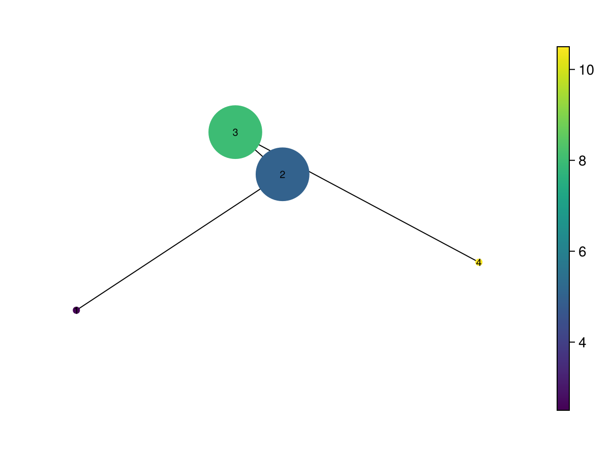
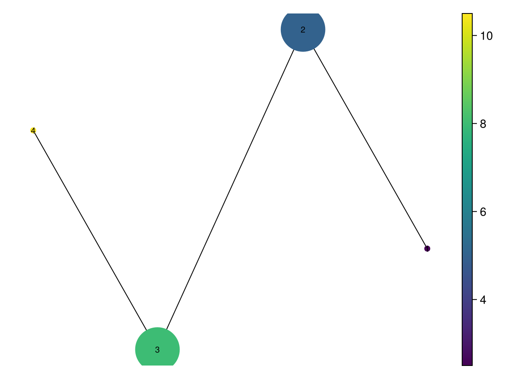
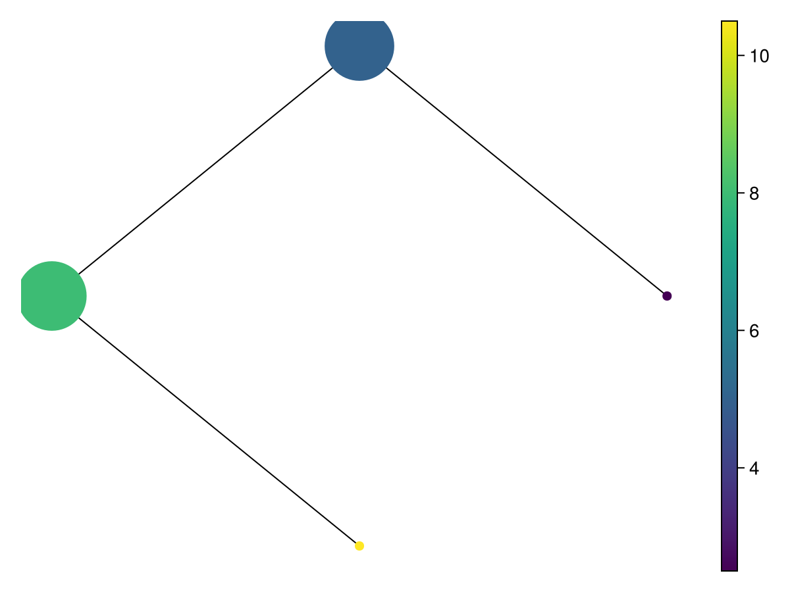
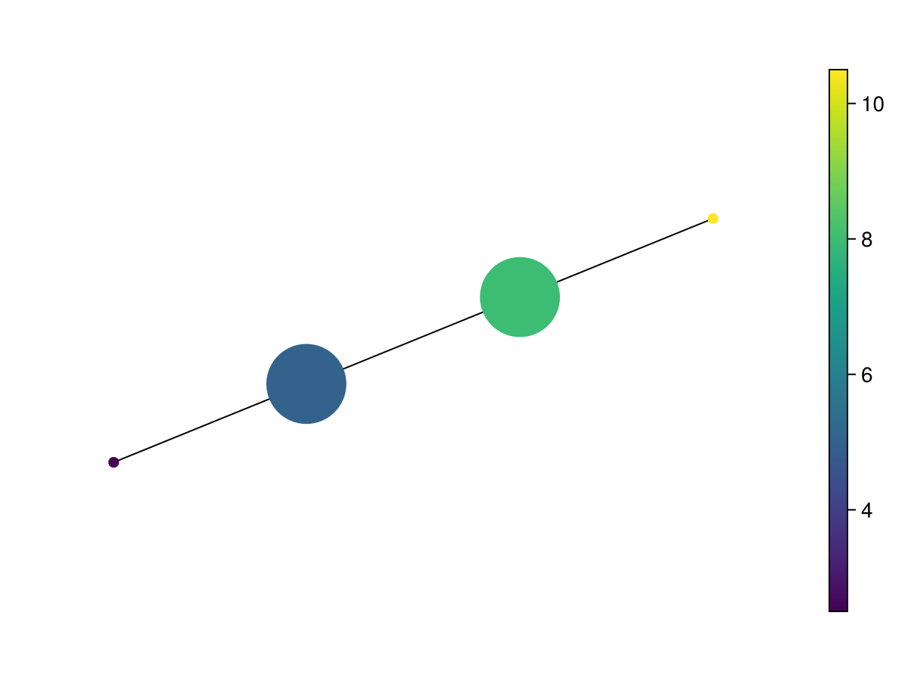
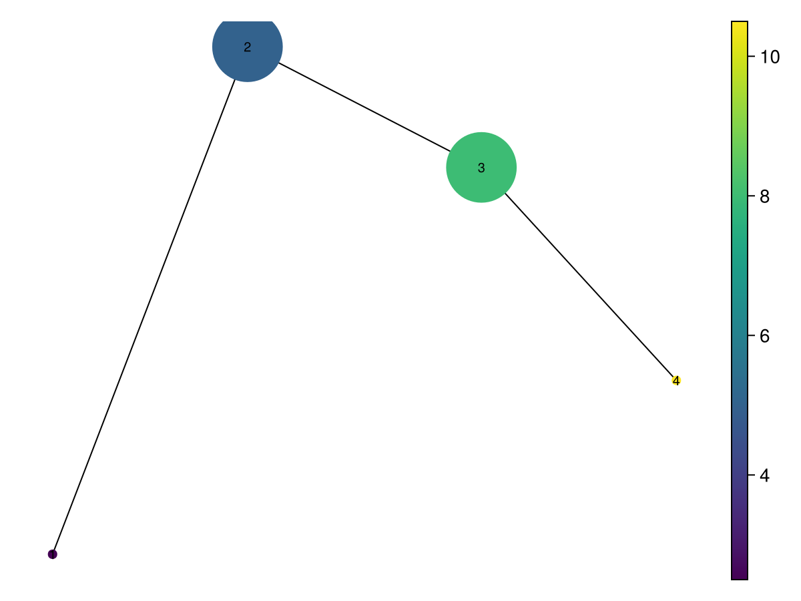

Layouts: what does distance in the drawing mean?
A layout changes node coordinates, not the Mapper graph, cover memberships, or node summaries. Two nodes drawn close together are not necessarily close in the original metric. Select a layout according to what you want the drawing to explain.
Choose a family
| Family | Functions | What supplies positions |
|---|---|---|
| Graph topology | layout_spring, layout_stress, layout_spectral_graph, layout_sfdp, layout_shell | Graph connectivity |
| Original coordinates | layout_landmarks | First two/three coordinates of member centroids |
| Global centroid geometry | layout_mds, layout_pca, layout_kpca, layout_ppca, layout_fa, layout_ica | A matrix with one centroid per node |
| Manifold embedding | layout_isomap, layout_lle, layout_hlle, layout_lem, layout_ltsa, layout_diffmap, layout_tsne, layout_umap | Centroid neighbourhoods or embedding objectives |
| Custom | layout_generic | Your function applied to the centroid matrix |
Graph layouts are useful for inspecting branches, loops and connected components. Their lengths, rotations and spacing are drawing choices. Centroid layouts retain information about where subsets lie in the cloud, but averaging can move a centroid away from the observed manifold. Manifold embeddings can emphasize local structure while distorting global distances.
Despite its name, layout_landmarks computes member centroids. For Ball Mapper they need not coincide with the sampled landmark points. No dimension reduction is fitted: it takes the first min(dim, ambient_dimension) centroid coordinates, requiring an effective dimension of two or three.
Use an explicit layout
The following small overlapping cover lets us compare layout APIs without depending on a clustering choice:
using CairoMakie, TDAplots
using Graphs: path_graph
X = EuclideanSpace([[Float64(i), sin(i), cos(i)] for i in 1:12])
C = [collect(1:4), collect(3:7), collect(6:10), collect(9:12)]
M = Mapper(X=X, C=C, g=path_graph(4))
ctd = centroid(M)
@assert size(ctd) == (3, 4)
mapper_plot(M; node_positions=layout_landmarks(M; dim=3), show_node_ids=true)
centroid returns an ambient_dimension × number_of_nodes matrix; columns are nodes. Each layout_* wrapper returns one Makie point per node. Pass that vector as node_positions:
mds_positions = layout_mds(M; dim=2)
@assert length(mds_positions) == length(M.C)
mapper_plot(M; node_positions=mds_positions, show_node_ids=true)
The MDS wrapper uses the centroid coordinate matrix, rather than shortest-path distances in M.g. Graph spectral embedding (layout_spectral_graph) and centroid Laplacian Eigenmaps (layout_lem) therefore answer different questions even though both are spectral methods.
Graph algorithm objects and Mapper wrappers
mapper_plot has two routes:
mapper_plot(M; node_positions=layout_shell(M))
or supply an algorithm called on the graph:
mapper_plot(M; layout_function=NaiveLayouts.Spring(dim=3))
layout_function receives M.g, whereas layout_spring(M) and the other package wrappers receive a Mapper. To use a Mapper wrapper through that keyword, capture M: layout_function=g -> layout_pca(M). When node_positions is supplied, it takes precedence over layout_function.
The explorer accepts layout_function, but currently has no node_positions keyword. Use layout_function=g -> precomputed_positions to retain a chosen layout there.
Bring your own embedding
layout_generic calls your function on the centroid matrix. It expects a 2 × number_of_nodes or 3 × number_of_nodes matrix in return, with columns in the same node order.
custom_positions = layout_generic(M, c -> c[[1, 3], :])
mapper_plot(M; node_positions=custom_positions, show_node_ids=true)
This projects to original coordinates 1 and 3. A learned embedding can be substituted, provided it follows the same orientation. A transposed matrix silently changes which columns correspond to nodes or leads to inconsistent plot inputs, so check dimensions explicitly.
Constraints and reproducibility
Most wrappers accept dim=2 or dim=3 and forward further keyword arguments to their underlying package. layout_shell is always two-dimensional. Embedding methods differ in rank requirements, accepted keywords, neighbourhood sizes and random initialization; the wrappers do not make those requirements interchangeable.
On a tiny graph, start with a graph layout or centroid projection. Neighbourhood methods need fewer requested neighbours than available nodes, and Isomap-style methods need an appropriate connected neighbourhood graph. Rank-deficient centroids may not support the requested statistical dimension. For stochastic methods, configure the underlying method's random seed/RNG where supported, record parameters and save final coordinates when comparisons require the same drawing.
Do not interpret a new visual loop or an apparent split in an embedding as a change in Mapper connectivity: check M.g and the overlapping member sets directly.